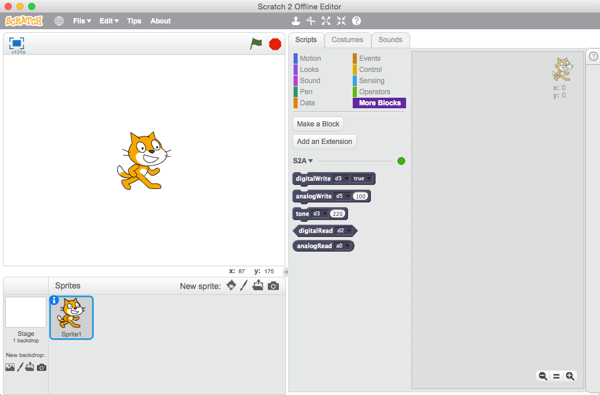

Introduction
S2A is a Scratch2.0 Extension that allows for simple programming of the Arduino open source hardware platform. It provides new blocks for managing sensors and actuators connected to Arduino.
Contents
The Interface
S2A blocks (Basic Mode) in Scratch2.0 Offline Editor
S2A Blocks is provided with a basic microcontroller features.
S2A.app (S2A.exe)
S2A.app (S2A.exe) connect the Scratch2.0 offline editor and Arduino.

How to Use
- Download
S2A.zipand Unzip - Connect the Arduino to the computer via USB cable.
- Upload the
ArduinoCode/s2a/s2a.inousing the Arduino IDE. - (Windows only,) Install
App/S2A-0.1-win32.msi. - Execute with
s2a.exe (windows)orApp/s2a.app (Mac). - Select Serial Port that is connected to the Arduino and Click "Connect" Button.
- Open
Scratch 2.0 Offline Editorpulse SHIFT key and "File" and "Import experimental HTTP extension". - Choose the
Extensions/s2a_base.json. - Now you can access the s2a blocks in the "More Blocks" tab.
Technical details
Support Language
- English
- Japanese (Blockls only)
Supported boards
S2A works with Arduino Uno. Other boards haven't been tested, but they may also work.
Connectivity
S2A Basic mode allows for
- 6 analog inputs (analog pins)
- 6 digital inputs (digital pins 2, 4, 7, 8, 13)
- 6 analog outputs (digital pins 3, 5, 6, 9, 10, 11)
- 6 digital outputs (digital pins 3, 5, 6, 9, 10, 11)
- 6 tone (digital pins 3, 5, 6, 9, 10, 11)
In addition , digital inputs is pulled up.
Protocol
S4A is in accordance with the specifications of the Scratch HTTP Extension.
In Future
Added custom mode capable of calling the function . If possible , so as easily function can create in BlocklyDuino.